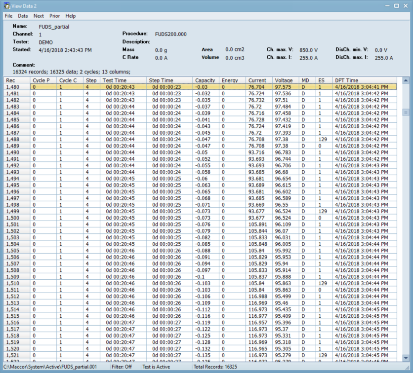

Software
Included with every test system is Maccor's Complete Software Suite. Designed to save valuable time when running tests and evaluating data. The comprehensive software suite is compatible with all Maccor Testers.
MacTest

MacTest32 acts as an essential bridge between the operator and the hardware, ensuring flawless communication and offering real-time monitoring of test positions. ...Learn more
Build Test

Experience the simplicity of creating test procedures with Build Test's user-friendly grid layout and menu-driven cells. When selecting specific cells, a dropdown menu will appear, ensuring that only valid entries can be made. Each test step is represented by a series of rows, with each column serving as a parameter for every step. ...Learn more
View Data
Display real-time and archived data records in an easy to view table. Save time by using search and filter functions to quickly find the critical information you need. ...Learn more
MIMS Client
Experience the potential of the MIMS Client, an exceptional statistical and analysis tool. Simplify the evaluation of test data with this application. The MIMS Client effortlessly generates charts and statistical tables for single or multiple data files....Learn more
MIMS Server

Streamline your data integrity with the MIMS Server, which automatically gathers test data from all your Maccor test systems creating back-ups of system configurations, and raw binary data. Optionally generate ASCII data file. Seamlessly access this centralized data using the MIMS Client program. ...Learn more
Data Export
Take control of your data by converting raw binary files to ASCII, customizing the formats and data fields that matter to you. Seamlessly merge data files from different test channels or split large files. ...Learn more
CAN Editor

Your life is made simple with the CAN Editor. Import DBC files for editing or create your own CAN profile for reading and writing on the CAN Bus....Learn more
SMBus Config
Import or create your own scan-list for the deviice. Program your chip and download real-time configurations values. ...Learn more
Waveform Edit
Import a CSV or Text file to convert into a Maccor Waveform File to run as a test step. Use the built-in scaler and choose your mode of operation. ...Learn more